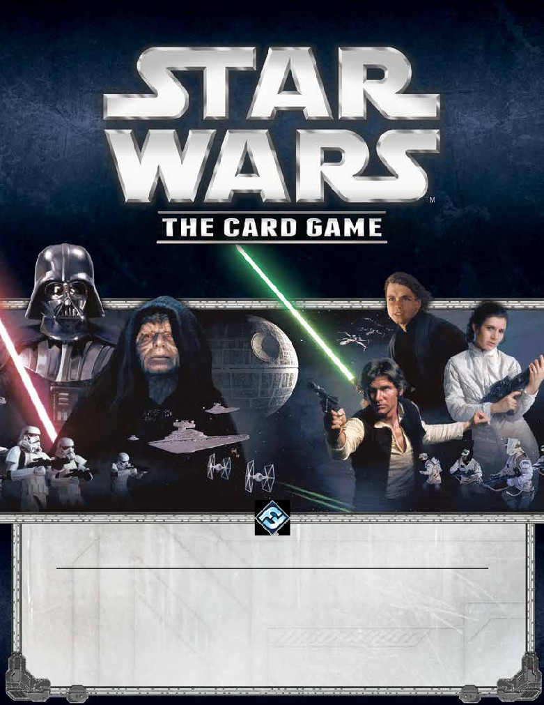
Official Rules Clarification,
Frequently Asked Questions, and Errata
EFFECTIVE 04/12/2017 - Version 5.0
New Content: Card Errata (pg. 2), Restricted List (pg. 4), Affiliation Fate Cards (pg. 17)
If you have any Star Wars LCG rules questions, please submit them using the form on the following page:
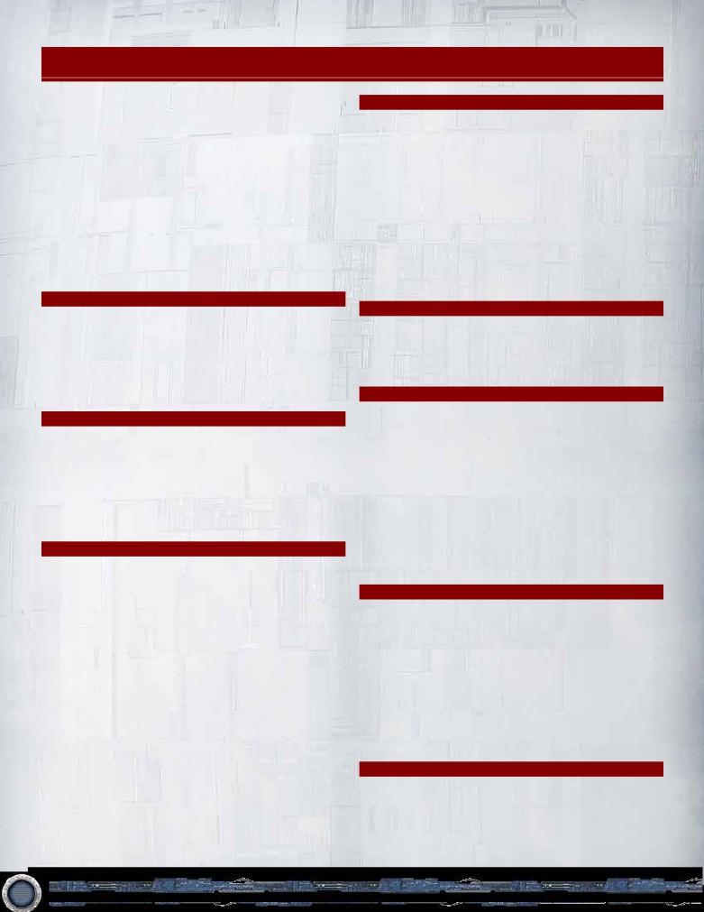
Card Errata
This section contains the official clarifications and errata
Hoth Cycle
that have been made on individual cards or sets in Star
Wars: The Card Game. The card entries are ordered by
(v3.0) Wedge Antilles
0183
the set in which the specified card was printed.
Should read: “This card may enter play as an
enhancement on a friendly Speeder or Fighter unit, with
Errata overrides the originally printed information on
the text: “Action: Focus this enhancement to remove
the card it applies to. Unless errata for a card appears
1 focus token from enhanced unit.””
below, the original English non-draft product printing
of that card and all of its information is considered
(v3.0) Luke Skywalker
0301
accurate, and overrides all other printings. This includes
The second paragraph of this card should read: “This
translated cards, promotional cards, and printings
card may enter play as an enhancement on a friendly
which may appear in alternate products. The errata on
Speeder or Fighter unit, with the text: “Enhanced unit
any individual card always applies to all versions of that
gains æ ∫. If enhanced unit leaves play, put this card
card.
into play as a unit.””
Most Recent Printing
Balance of the Force
In the case where an LCG card is reprinted with updated
(v4.1) Death Star II
0455
errata text in a later printing, the most recent English
printing is the legal version of the card. All other LCG
Should read: “Elite. Shielding. This unit cannot be
printings are assumed to be updated with the errata
affected by enemy card effects
“
text. FFG will see that all LCG reprints with updated
errata text are also recorded in the FAQ.
Echoes of the Force
Core Rulebook
(v2.2) Along the Gamor Run
0552
Should also have the text: “Limit 1 per objective deck.”
Refresh Phase (p. 12)
The parenthetical text after step 1, which reads, “...(Any
(v2.2) May the Force Be With You
0567
effect with the text “after you refresh” can be used after
Should read: “...(Limit once per turn.)”
completing this step)” is misplaced.
(v3.1) Native Support
0592
“After you refresh” effects should be initiated after the
completion of step 3 of the refresh phase.
Should read: “...(Limit once per turn.)”
(v3.1) Asteroid Base
0614
Core Set
Should read: “...(Limit once per turn.)”
(v3.0) Black Squadron Pilot
0017
Should read: “This card may enter play as an
Between the Shadows
enhancement on any Fighter unit you control, with the
text: “Enhanced unit gains æ º.””
(v4.1) Lightsaber Deflection
0089
Should read: “Interrupt: When damage would be
(v1.0) Fleeing the Empire
0056
dealt...”
Should read: “Reaction: After your refresh phase
ends, ...”
(v3.1) Journey Through the Swamp
0647
(v1.0) Fleet Command Center
0057
Should read: “Reaction: After this objective enters play,
focus it to search your deck...”
Should read: “Reaction: After your refresh phase
ends, ...”
(v3.1) Jubba Bird
0648
(v4.1) Lightsaber Deflection
0089
Should read “...(Limit 1 per turn.)”
Should read: “Interrupt: When damage would be
Rogue Squadron
dealt...”
(v4.1) The Survivors
0722
(v3.1) The Secret of Yavin 4
0144
Should read: “Interrupt: When a unique ∏ Character
Should read: “Reaction: After 1 of your other objectives
unit would be dealt damage, ... “
is engaged, your opponent engages this objective
instead. (Limit once per turn.)”
2
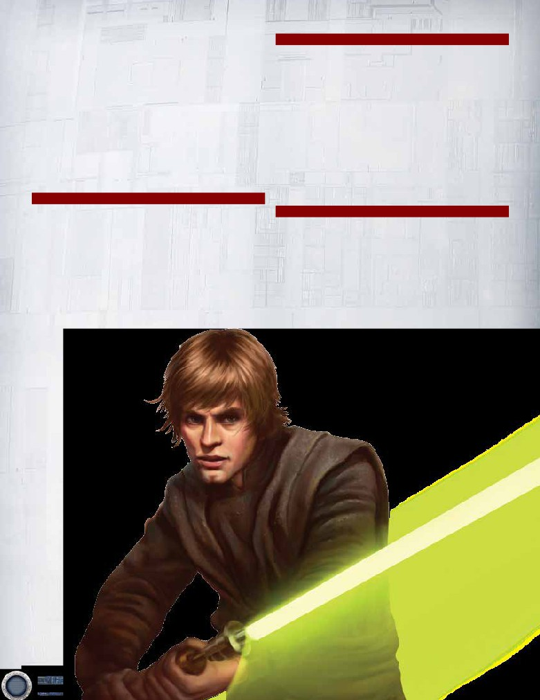
(v3.1) Desperation
0730
Endor Cycle
Should have the line: “Play only on your turn.” at the
beginning of the text box.
(v4.1) Home One
0965
Should read: “...(Limit once per turn.)”
(v4.0) Boba Fett
0789
Should read: “Pilot (2). (Reaction: After this card enters
(v4.2) Endor Entrapment
0998
play as a pilot, ...”
Should read: “Interrupt: When an ¥ Vehicle unit would
be dealt damage...”
(v3.2) Unfinished Business
0797
Should read: “Action: Put a ∏ unit...”
(v4.2) Natural Cover
1013
Should read: “Interrupt: When a Character unit or an
(v4.0) Well Paid
0828
Endor objective would be dealt damage...”
Add: “Play only during your deployment phase.” on the
line after the Limited keyword.
(v4.3) Moruth Doole
0955
Should read: “...(Limit once per turn.)”
Imperial Entanglements
Opposition Cycle
(v4.2) The Tarkin Doctrine
0871
Should read: “...(Limit 1 per turn.)”
(v5.0) Threat from the Depths
2002
Should read: “Reaction: After an engagement is
(v4.2) Rule By Fear
0874
declared against a ∑ objective, focus this objective to
Should read: “Reaction: After an enemy unit with
put a Creature unit into play...”
printed cost 3 or lower enters play...”
(v5.0) His High Exaltedness
2010
(v5.0) Enforced Loyalty
0881
Should read: “Interrupt: When an objective you control
Should read: “Reaction: After an opponent’s turn ends,
is destroyed...”
if this objective is undamaged, deal 1 damage to a
target enemy objective.”
3
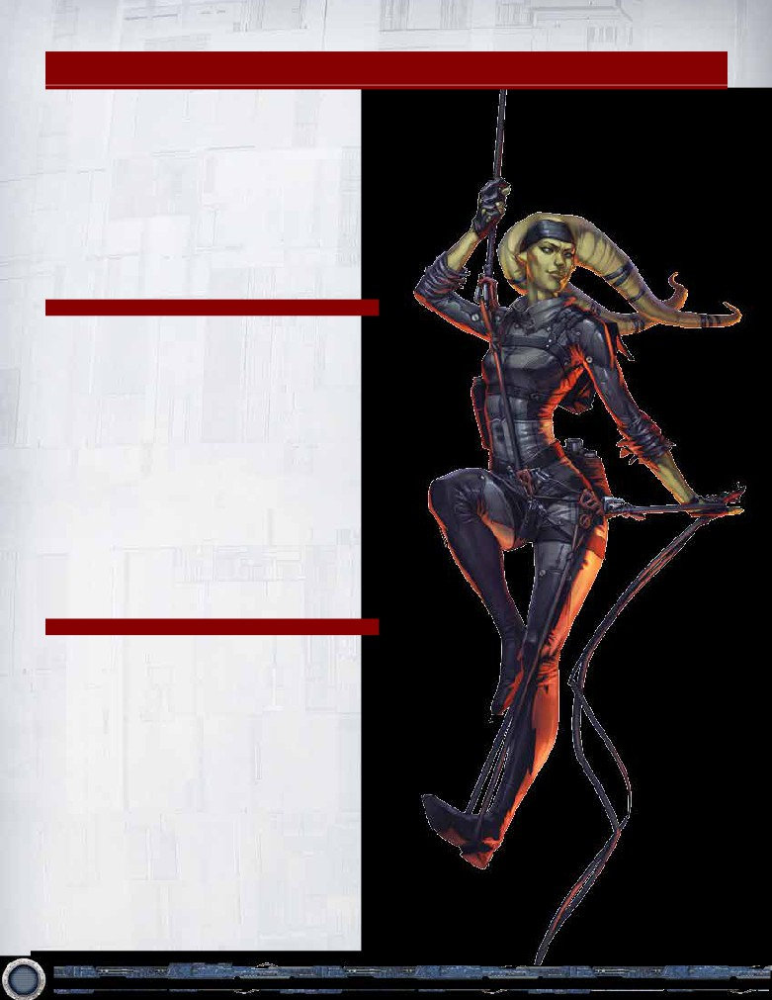
Restricted List
The following groups are objective set combinations that
are restricted for tournament play. A player may select
1 objective set from each group for any given deck.
Objective sets within the same group cannot be in the
same deck.
A player may run as many copies of his or her chosen
restricted objective set(s) in a deck as the regular game
rules allow.
Each entry on the restricted list refers to an entire
objective set, identified by the title of the objective card
and the objective set number.
Light Side
LS Restricted Group 1
• The False Report (99)
• Against All Odds (103)
LS Restricted Group 2
• May the Force Be With You (112)
• The Master’s Domain (128)
LS Restricted Group 3
• Heroes and Legends (097)
• Spark of Rebellion (229)
LS Restricted Group 4
• Against All Odds (103)
• The Last Warrior (237)
Dark Side
DS Restricted Group 1
• Deploy the Fleet (46)
• Enforced Loyalty (180)
DS Restricted Group 2
• Masterful Manipulation (135)
• The Spice Trade (195)
DS Restricted Group 3
• The Slimiest Scheme (126)
• I Don’t Like You, Either (240)
4
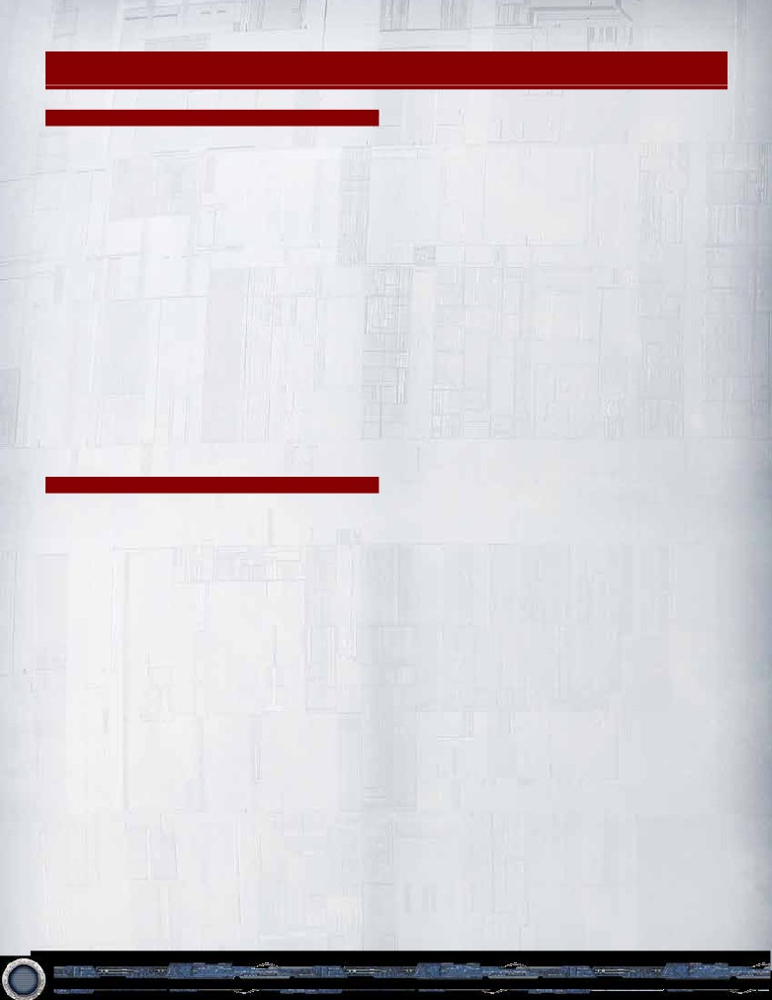
Rules Clarifications
1. Draw, Search and Reveal
not completed, an engagement has not been declared.
(1.1) Drawing Multiple Cards
(2.4) Facedown Cards in Edge Stacks
When a player draws multiple cards (e.g., by drawing
A player may look at the facedown cards in his or her
2 cards during his or her draw phase, or due to a card
own edge stack at any time.
effect like that of Dark Precognition (Core 0034) ), he
(2.5) Facedown Captured Cards
or she is considered to be drawing them one at a time,
The Dark Side player may look at facedown cards
not all at once. This is important for effects that may
captured at his or her objectives at any time. Barring
initiate by a card being drawn.
a card effect that allows him or her to do so, the Light
(1.2) Shuffling After a Search
Side player may not look at facedown captured cards.
If an effect allows a player to search the entirety of
(2.6) Force Cards and Control Change
any deck for any reason, the owner of that deck must
If a player loses control (to an opponent) of a unit that is
shuffle that deck to the satisfaction of their opponent(s)
committed to the Force, the Force card on that unit is
upon completion of the search.
returned to its owner’s supply of available Force cards.
(1.3) Duration of “Reveal”
(2.7) Enhancement Cards and Control Change
Whenever cards are revealed, they remain revealed
When a card changes control, enhancements attached
until they arrive at their final destination as specified by
to that card do not themselves change control unless
the effect that caused the card to be revealed.
specified by the control change effect.
(1.4) Result of Search
If the change of control results in an illegal attachment
When resolving an effect that searches or looks at a
state (for example, an enhancement with the text
deck or part of a deck, a player is not required to find
“Enhance a friendly unit” that is now attached to an
the object of the search.
enemy unit), the enhancement is placed in its owner’s
discard pile. (See (2.19) Enhancements and Attachment
2. Game Play
Restrictions (pg. 6).)
(2.1) Infinite Loops
(2.8) Declaring Engagements
If it is possible, with certain card combinations, to
During a player’s conflict phase, he or she is permitted
create an “infinite loop,” then when executing an infinite
to declare one engagement against each of his or her
loop the resolving player must follow these two steps:
opponent’s objectives each turn. The act of declaring
an engagement against an objective (which consists of
1. Clearly display the infinite loop to the opponent (and
declaring the objective and declaring attackers) satisfies
tournament judge, if the opponent requires it). Thus,
this condition for any given objective. If a declared
the player must display, using all cards involved, one full
engagement resolves against a different objective, the
cycle of the infinite loop.
engagement is still considered declared against the
original objective, and is not considered declared against
2. State how many times he or she wishes to execute
the new objective against which it resolves.
this loop. For example, the player could say “I will now
execute this loop seventeen million times.” Then resolve
(2.9) Simultaneous Effects Conflict
the loop that many times instantly. If the execution of
If the resolution of two or more simultaneous effects
this loop causes the player to win the game, the game
would conflict with one another, the active player
is over and the executing player wins.
determines the order in which the effects resolve.
Infinite loops should never be abused to cause
(2.10) Application of Modifiers on Variable Quantities
the game to stall.
The game state constantly checks and (if necessary)
updates the count of any variable quantity that is being
(2.2) Priority of Simultaneous Resolution
modified.
If a single effect affects multiple players
simultaneously, but the players must individually
A quantity cannot be reduced below zero: a card cannot
make choices to resolve the effect, the player who
have “negative” icons, traits, cost, or keywords.
played or executed the effect chooses first, with
priority then proceeding clockwise around the table.
Any time a new modifier is applied, the entire quantity is
recalculated, considering all active modifiers.
(2.3) Engaging Objectives
An objective is considered “engaged” only after steps 1
(2.11) Doubling Effects
(Declare objective) and 2 (Declare attackers) on page
Apply all additive and/or subtractive modifiers before
18 of the core rules are completed. If these steps are
applying any doubling effects.
5
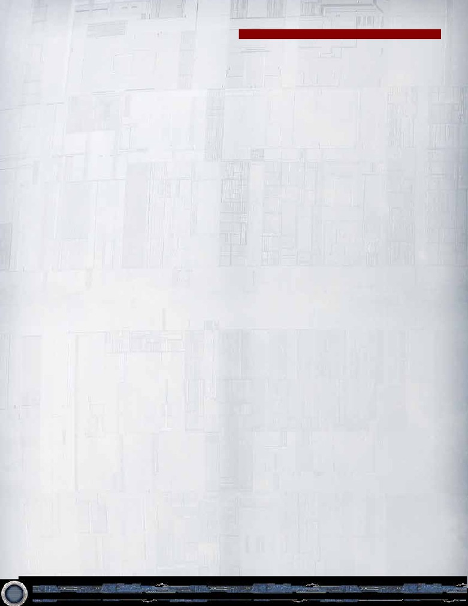
(2.12) Multiple Instances of Keywords
3. Card Effects and Abilities
Cards are considered to either have a keyword or to
not have that keyword. A single card that has and/or is
(3.1) Cancellation of Effects
gaining the same keyword from multiple sources does
Effects that are canceled are still considered to have
not affect the application of that keyword.
been initiated or played. Only the effects are canceled.
Any costs have still been paid, and are not returned or
The value pertaining to the edge keyword does
refunded.
accumulate. A card with “edge (1)” that is also gaining
“edge (2)” would function as a card with “edge (3).”
(3.2) Discard Pile
You may not change the order of cards in any discard
(2.13) Rescue
pile. You may look at any player’s discard pile at any
A captured card is rescued if the card it is attached to
time.
leaves play for any reason.
(3.3) “Participated” and Removal from an
(2.14) Protect
Engagement
Some cards have the ‘Protect’ keyword followed by a
A unit is only considered to have participated in an
descriptor other than a Trait (e.g. a card type, specific
engagement if it remains in the engagement through its
card name, etc.). A card with such a keyword (e.g.
resolution. If they are removed from an engagement,
‘Protect objective’) may take damage instead of any
there is no memory of that unit having participated in
friendly card that matches the specified descriptor.
that engagement.
(2.15) Cards Leaving Play
(3.4) Qualifiers
If a card that is not under the control of its owner
When card text includes a qualifier followed by multiple
leaves play, after the resolution of the effect that drives
items, the qualifier applies to each item in the list, if it is
it from play, the card is physically placed in its owner’s
applicable. For instance, in the phrase “each enemy unit
equivalent out of play area (hand, deck, or discard pile).
and objective,” the word “enemy” applies both to “unit”
Other card effects cannot interact with this secondary
and to “objective.”
physical placement.
(3.5) Initiation of Card Effects
(2.16) Paying Costs
Most card effects can only be initiated or used when the
A player can only pay costs using cards and game
card on which the card effect is printed is in play. Event
elements that he or she controls.
card effects are initiated when the event card is played
from a player’s hand.
(2.17) Unique Cards
A unique card’s correlation to its copies is defined by
Some card effects can be initiated from an out of play
each card’s printed title, not by any modifications to
state, but only if the effect itself (or another effect)
those titles.
explicitly enables its initiation from the out of play state.
(2.18) Control Change During an Engagement
(3.6) Initiation of Card Abilities
Unless specified by card text, a unit that changes
In order to trigger a card ability, the possibility that at
control to an opponent during an engagement is
least some independent aspect of that card ability’s effect
removed from the engagement.
might successfully resolve must exist. (In other words,
card abilities cannot be initiated just to pay the cost.) If,
(2.19) Enhancements and Attachment Restrictions
given the current game state, it is impossible for at least
Any enhancement that attaches to another card (with
one aspect of the effect to resolve, the ability cannot be
text such as “Enhance a friendly Character unit”) is
triggered.
required to continually meet its attachment condition
to remain in play as an attachment. It is immediately
This check is made during step one of Effect Resolution
discarded from play at any time the attachment
(pg. 10), when all play restrictions are checked.
condition is not met (such as the enhanced Character
unit no longer being friendly) or is not present (such
(3.7) Lasting Effects
as the enhancement losing the “Enhance a friendly
Any effect that modifies a card or the game state for a
Character unit” text).
specified duration of time is known as a ‘lasting effect.’
All lasting effects that are modifying a card expire when
Enhancements that do not attach to another card (such
the card they are modifying leaves play.
as those with “Enhance your play area”) do not require
this text to remain in play.
(3.8) Priority of Forced Interrupts and Forced Reactions
If a Forced Interrupt and a non-Forced Interrupt would
(2.20) Capturing Cards
trigger at the same time, you must resolve all Forced
The LS player cannot capture cards. DS cards cannot
Interrupts before resolving any non-Forced Interrupts.
be captured. Objectives controlled by the LS player
Similarly, Forced Reactions must all be resolved before
cannot have captured cards at them.
any non-Forced Reactions resolve when both are
triggered at the same time.
6
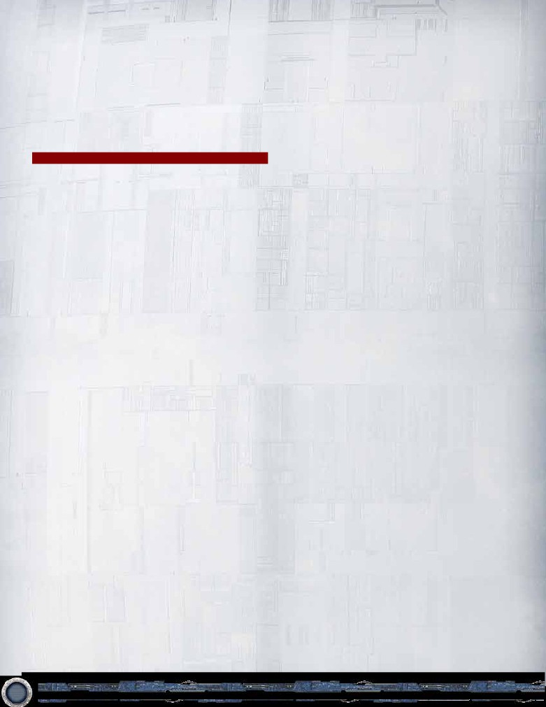
(3.9) Abilities that Interact with Features of Captured
“Limit 1 per X” refers to all copies of a card, by title.
Cards or Cards in Edge Stacks
Only 1 copy of a card with the same title may be
Any ability that explicitly engages the features of a
triggered by each player during each period of X. This
captured card or a card in an edge stack engages the
type of limit tends to appear on event cards.
printed features of that card.
If a card or effect with a limit is canceled, it is still
(3.10) Initiating Card Abilities
considered to have been played or triggered, and counts
A player is considered to initiate all card abilities on
towards the limit.
cards he controls. In addition to all triggered abilities,
(4.9) The word “Switch”
this includes all constant abilities with a point of
initiation.
In order for a switch to occur, switched items must exist
on both sides of the switch.
4. Definition of Terms
(4.10) The word “Your”
If a player controls a card that uses this word, “your”
(4.1) The word “to”
refers to other cards and/or items that same player
The word “to” as in “Do X to do Y” indicates that X is a
controls.
cost that must be paid before Y can occur.
(4.11) Cannot be Damaged
(4.2) The Letter X
A card that “cannot be damaged” cannot have damage
Unless specified by a preceding card, card effect, or
dealt, reassigned, or moved to it, and it cannot be
granted player choice, the letter “X” is always equal
chosen to take damage. Any pre-existing damage on
to 0.
a unit that gains “cannot be damaged” remains on the
unit.
(4.3) Moving Damage
Moving damage is not considered dealing damage.
A card that “cannot be damaged” may still be destroyed
However, the unit that receives the moved damage is
by non-damaging effects.
still considered to have been “damaged.” (For example,
a unit with “Protect Character” can be used to absorb
(4.12) Dealing/Dealt Damage
damage that is being moved to another Character unit.)
‘Dealing damage’ and ‘dealt damage’ are two similar, but
distinct game terms.
(4.4) Framework Effects
A Framework Effect is any effect that arises from the
‘Dealing damage’ is a process that generates damage
resolution of a Framework Event (see pg. 30 of the Core
that needs to be assigned to one or more cards.
Rulebook), as opposed to an effect that originates from
the text of a card. (Note that the resolution of combat
Damage has been successfully ‘dealt’ if it has actually
icons and counting/comparing Force icons in an edge
made it onto a card (units and objectives being the
battle are both Framework Effects.)
most common). In order for a card to have been
‘dealt damage,’ it must have one or more damage
(4.5) Card Effects
tokens physically placed on it. If some effect prevents,
A Card Effect is any effect that comes from the
reassigns, or moves that damage to another card, the
resolution of text printed on a card.
original card has not been ‘dealt damage.’
Card effects can be preceded by a triggering condition
(4.13) Triggered Abilities
and/or a cost. Triggering conditions and costs are not
Action, Reaction, and Interrupt abilities are known
considered effects.
as Triggered Abilities. Such an ability is used when a
player optionally initiates it at a specific moment in the
(4.6) “Winning” an Edge Battle
game.
A player is considered to have won an edge battle when
it resolves with a result that gives that player the edge.
If the word “Forced” precedes a triggered ability, the
ability’s initiation is mandatory.
(4.7) “Winning” a Force Struggle
An ability is considered to be successfully triggered after
A player is considered to have won a Force struggle
all required targets have been chosen (if there are any).
when it resolves with a result that moves or maintains
This occurs after step 5 of Effect Resolution (pg. 10).
the Balance of the Force to that player’s side.
(4.14) The word “Copy”
(4.8) Limits
A copy of a card is any card that shares the same title.
“Limit once per X” refers to that specific ability on that
particular card. Each copy of a card with such a limit
(4.15) “Readies”
may trigger its ability once per each period of X. This
A card “readies” when it transitions from an exhausted
type of limit tends to appear on cards that stay in play.
state to a ready state. Generally, this occurs when the
final focus token is removed from that card.
7
(4.16) “Reveal”
LS player uses Rahn’s Guidance (Heroes and Legends,
To “reveal” a card, that card must go from a hidden
499) to find Kyle Katarn (Heroes and Legends, 497),
state to an unhidden state by a card or game effect
revealing the card to the DS player. Later in the turn,
that uses the term “reveal.” For example, facedown
the DS player forgets what card the LS player revealed
cards placed in an edge stack are revealed when those
from Rahn’s Guidance. The LS player is not required
edge stacks are flipped over after each player has
to tell him or her, as Kyle Katarn became hidden
consecutively passed the opportunity to place more
information (moving into the LS player’s hand) after
cards into his or her edge stack. Additionally, a card
Rahn’s Guidance finished resolving.
from a player’s hand would be revealed when a card or
game effect caused him or her to show that card to all
(4.20) Hidden Information
Hidden information is any information about the game,
players.
game state, or cards unavailable to one or more
(4.17) “Numeral”
players. This includes the cards in a player’s hand, cards
A “numeral” is any game element represented by a
in an edge stack before they are revealed, information
number (1, 2, 3, etc). Note: “one, two, three, etc” are
about captured cards other than their location, etc. If a
not numerals, nor are “once, twice, etc.” Additional
card is temporarily revealed, it is derived information for
note: a multi-digit number (12, 13, 14, etc) is
as long as all players are able to uniquely identify that
considered a single numeral.
card.
(4.18) Open Information
A player cannot learn hidden information without the
Open information is any information about the game,
aid of a game effect, rule, or another player verbally
game state, or cards that is available to all players. This
communicating the information. However, if a player that
includes faceup cards in discard piles, the number of
has access to hidden information about the game or
cards in a player’s draw deck, objective deck, or hand,
a card and chooses to verbally share it with his or her
any destroyed objectives, the Death Star dial’s current
opponent, that player is not required to tell the truth.
position, the location of a captured card, and any other
information continuously available to both players.
All players are entitled access to open information and
cannot hide open information from an opponent or omit
specific details. A player must allow his or her opponent
to discover the information themselves if they attempt
to do so.
(4.19) Derived Information
Derived information is any information about the
game, game state, or cards all players have had
the opportunity to learn through card/game effects
or through the process of deduction using open
information. This includes a facedown card in play
that was revealed via an effect, how much damage
is currently on a unit or objective, which units are
committed to the force, etc.
Derived information may be marked with the use of
a token or other indicator so that players remember
the information. A player cannot misrepresent derived
information or hide the open information necessary to
discover derived information.
If derived information is dependent on a player’s previous
decision or action, he or she must answer truthfully
when asked about that decision or action. For example,
the DS player uses Death From Above (Core Set, 37)
and chooses two units. Later in the engagement, the
LS player forgets which units the DS player chose and
asks the DS player. The DS player must answer honestly
which two units he or she chose.
If derived information becomes hidden information,
the player who made a previous decision or action
related to that information is not required to divulge any
details about that decision or action. For example, the
8
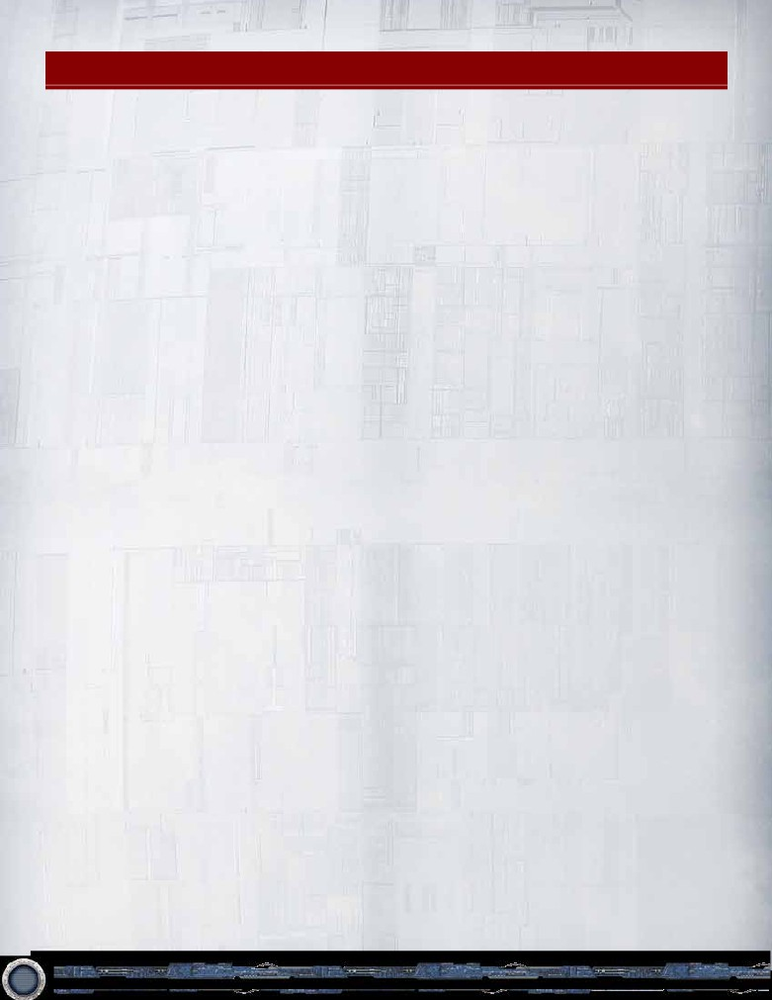
Advanced Timing Rules
While most effects and rules for Star Wars: The Card
An interrupt ability must be used when its triggering
Game, are simple to resolve and generally without
condition is occurring, before the triggering condition
controversy, sometimes card abilities interact in ways
has been fully resolved. Interrupt effects often cancel,
that require a more detailed understanding of timing (i.e.
redirect, or otherwise change the resolution of the
when, and the order in which, abilities are resolved].
triggering condition.
Timing conflicts are generally resolved dependent on the
The active player always has the first opportunity to use
type of card ability in question (see “Card Abilities” on
an ability that interrupts a given triggering condition,
pages 24-25 of the core rulebook). This section provides
followed by his or her opponent, after which the active
detailed rules to help players resolve advanced timing
player may use another interrupt, and so forth. Interrupt
issues.
opportunities for that triggering condition pass back and
forth between players in this manner until both players
Framework Events and Action Windows
have passed consecutively.
There are two basic elements of activity upon which the
Once the opportunity to interrupt a triggering condition
play of the game advances: the Framework Event and the
has been passed, that condition itself resolves (if it has
Action Window.
not been canceled), and further interrupts to that specific
framework events are activities that are dictated by the
triggering condition may not be used.
game rules rather than by player choice; they are the
fundamental occurences and rituals that propel the game
Reaction Ability Timing
forward. Framework event windows cannot be broken by
Reaction abilities can be used during framework event
player actions. The grey framework event windows in the
windows and also during action windows, provided that
Timing Structure diagram on pages 30-31 of the core
the triggering condition indicated by the reaction abilitiy’s
rulebook identify each of the game’s framework events.
text is true.
Action effects (those denoted by a bold “Action” trigger
For example: The card ability of the Nightsister unit
on a card) may only be initiated by players during a turn’s
card reads “Reaction: After you commit this unit
action windows. The blue action windows in the Timing
to the Force, deal 1 damage to a target objective”.
Structure diagram on pages 30-31 of the core rulebook
The words “After you commit this unit to the Force”
identify the opportunities in which players may initiate
describe the triggering condition that must be true
actions throughout a turn.
for this reaction to be used.
Action Abilities
A reaction ability is always used immediately after its
When an action window opens, the active player has
triggering condition has occurred and has been resolved.
the first opportunity to take an action, followed by his or
The active player always has the first opportunity to
her opponent. Then, the active player may take another
use an ability in reaction to a given triggering condition,
action, and so forth. In this way, the option to take an
followed by his or her opponent after which the active
action passes back and forth between the players until
player may use another reaction, and so forth. Reaction
both players consecutively pass.
opportunities for that triggering condition pass back and
forth between players in this manner until both players
An action ability is always fully resolved before the next
have passed consecutively.
begins, or before the game proceeds.
Once the opportunity to react to a triggering condition
Interrupt Ability Timing
has been passed, further reactions to that specific
triggering condition may not be used.
Interrupt abilities can be used during framework event
windows and also during action windows, provided that
Interrupt and Reaction Priority
the triggering condition indicated by the interrupt
In the case where both interrupt and reaction abilities
ability’s text is true.
could be taken from the same triggering condition--
For example: The card abillity of the Leia Organa unit
interrupt effects have a priority, and must be initiated and
card reads “Interrupt: When this unit leaves play,
resolved first. (Interrupts will always be used and resolve
remove all focus tokens from all cards you control.”
before the triggering condition itself, the triggering
The words “When this unit leaves play” describe the
condition will resolve second, and reactions to that
triggering condition that must be occuring for this
condition will be used and reasolve third.)
ability to be used.
If the triggering condition still is true after resolving all
interrupt effects (i.e., the triggering condition has not
been cancelled), reaction abilities may then be taken.
9
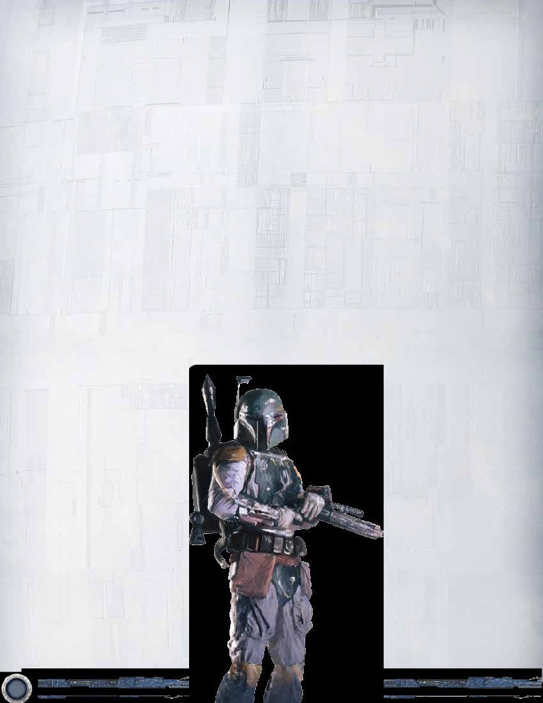
Effect Resolution
Counter-stroke, which interrupts Kris’s attempt
to play an event card, and therefore cancels the
When a player wishes to play a card, take an action,
effects of It’s Worse.
initiate an interrupt or reaction effect, or resolve a fate
card or a passive effect, they first declare their intent.
At this point, neither player has any more Interrupt
The following steps are then observed, in order:
or Reaction effects that can be played, so Counter-
stroke resolves (being the final nested effect played
0) Declare intent.
in the sequence), canceling the effects of It’s Worse.
1) Check play restrictions: can the card be played, or
Since these effects were canceled, It’s Worse
the effect initiated, at this time?
does not resolve (it is simply discarded), and the
2) Determine the cost (or costs, if multiple costs are
Lightsaber Deflection now resolves,redirecting one
required) to play the card or initiate the effect.
point of the damage away from Yoda.
3) Apply any modifiers to the cost.
4) Pay the cost(s).
If either player now has another Interrupt to the
5) Choose target(s), if applicable.
original triggering condition (damage being dealt to
6) The card is played, or the effect resolves.
Yoda), it can be played or initiated at this time.
If any of the above steps would make the triggering
When such a sequence of effects occurs, players
condition of an Interrupt effect true, that effect may be
should keep playing and triggering effects until the chain
initiated when that triggering condition becomes true.
of sequences runs dry (i.e. there are no interrupts or
If any of the above steps would make the triggering
reactions to the resolution of all effects from the last
condition of a Reaction effect true, that effect may be
effect played in the sequence).
initiated just after the triggering condition becomes
true.
The most recently played nested effect sequence is
always completely resolved before any former sequence
Nested Effect Sequences
of effects is resolved.
Effects generally resolve in a “first in, first out”
manner. For instance, if a player has two reaction
Damage Timing and Resolution
effects he or she wishes to play in reaction to a
To deal damage to a card, follow these steps in order:
single triggering condition, the first reaction is
played and resolved in its entirety, and then the
1. Assign Damage: Place damage tokens equal to the
second reaction is played and resolved.
amount of damage the damaging source is attempting
to deal next to the card or cards specified by the
It is possible, however, for an interrupt or
source.
reaction effect to cause a new
triggering condition that could
2. Protect: If a card is eligible to be protected
itself trigger a subsequent series
by something in play with the protect keyword,
of interrupt and reaction effects.
you may reassign any amount of the damage
Such effects will nest on top of one
to the protecting card (up to the protecting
another, creating a sequence of
card’s remaining damage capacity). This
effects, and these sequences need
reassignment does not change the source of
to be resolved in a “last in, first out”
the damage.
manner.
3.Shields: If the damage comes from an
For example: During an
enemy attack or enemy card effect, you
engagement, Tom’s unit, Yoda
may choose to use a shield on the card
, is dealt damage by an enemy
to prevent one damage assigned to
strike. This is the triggering
that card. Prevented damage is
event that allows the card
returned to the token pool.
Lightsaber Deflection to be
played, which allows Tom to
4. Take Damage: Place
any assigned damage that
redirect 1 point of that damage
to an enemy unit.
has not been prevented
or reassigned on the card,
Tom’s opponent, Kris, does not
up to the card’s remaining
want this to occur. When Tom
damage capacity. Any damage
attempts to play Lightsaber
in excess of the card’s damage
Deflection, Kris interrupts its
capacity is ignored. If no damage is
execution by playing It’s Worse
taken in this step, no damage has
! This card attempts to cancel
been successfully dealt.
the effects of Tom’s Lightsaber
Deflection.
Tom, however, is able to play
10
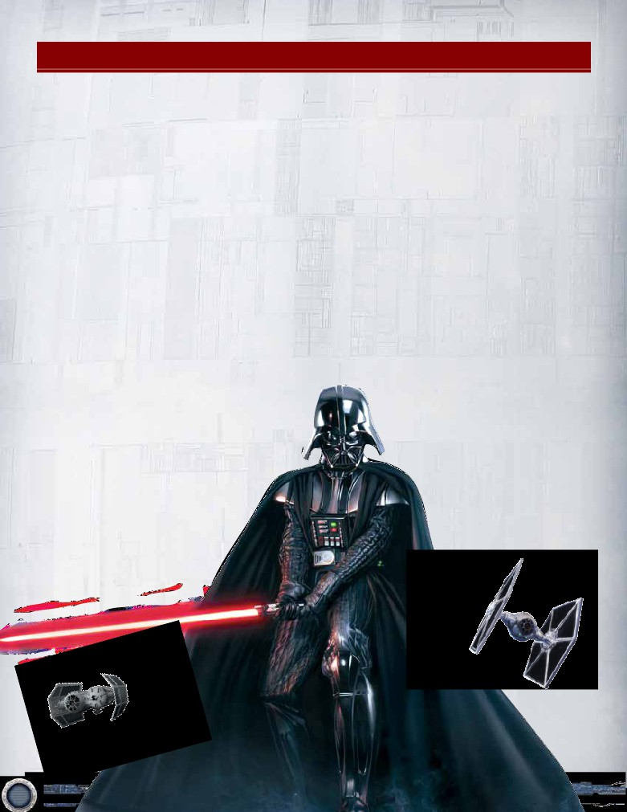
Frequently Asked Questions
If I have a TIE Attack Squadron (Core 147) in a battle and
If the only character I control in an engagement
I place a Twist of Fate (Core 0157 or 0171) but no other
is killed during the edge battle (such as from an
Fate cards in my edge stack, does the TIE Attack Squadron
opponent’s Heat of Battle (Core 0065 or 0169) ), what
gain the bonus æ icon and targeted strike keyword?
happens to the edge battle?
Yes. The TIE Attack Squadron’s passive ability checks
It still resolves as normal. You can win the edge battle
whether or not you have placed any Fate cards into
and have no characters left over, which would keep
any of your edge stacks during an edge battle this
your opponent’s characters from gaining their edge-
engagement. Even if those Fate cards are canceled (by
enabled icons for that combat.
an opponent’s Twist of Fate), or if the resolution of the
Can I use the ability on the Tribal Support (Core 0151)
Edge Battle is canceled (by your own Twist of Fate), a
Fate card has still been placed, and you would still gain
objective to discard a card from my hand even if there
the bonus æ icon and targeted strike keyword.
are no Ewok units in my discard pile?
No. In section (3.6), it is required that at least some
If I damage an opponent’s unit with Boba Fett (Core 0019)
and deal enough damage to destroy the unit, do I capture
aspect of the effect must be able to resolve in order
to initiate the ability. As there is no Ewok unit in your
or destroy the unit?
discard pile, no aspect of this effect can possibly
The unit is destroyed. Boba Fett’s ability is a reaction
resolve, so you cannot initiate the card ability.
that captures a unit. The damage from the combat
If I strike with an attacking character with both the
icons is applied to the unit and that unit is immediately
discarded if it has damage equal to or greater than
Shii-Cho Training (Core 0122) enhancement and the
targeted strike keyword, what happens?
its damage capacity. You may not capture units from
an out of play state (such as the discard pile) unless
You can choose which of the two effects you
specifically noted otherwise by a card effect.
would like to use, they do not work together.
Shii-Cho Training gives you the option to
When you are constructing your deck, if you include
an objective that contains a certain card (Sith Library
divide the striking unit’s damage among
participating units, targeted strike
(Core 0072) for example), do you have to use the
version of the card from that objective set or could
gives you the option to deal the
you instead use the same card with a different
striking unit’s damage to a non-
participating unit. You may use one
objective set number at the bottom?
effect or the other, but they do not
No, you must use the version with the
work together. (You may also use
objective set number that matches the
neither effect, if you wish to deal
objective you placed in your objective
damage as per the standard
deck.
game rules, to a single
participating enemy unit.)
11
If my opponent sacrifices their X-Wing Escort (Core
So long as the damage came from a source
0164) using Heroic Sacrifice (Core 0047), which effect
controlled by your opponent, the shield token will
occurs first, the X-Wing’s Interrupt or the targeting of
cancel one of the damage that is being transferred
Heroic Sacrifice?
via the protect keyword. The source of the damage
is still an opponent’s effect, so the shield can
From the “Effect Resolution” section of the
prevent that damage.
Advanced Timing rules above, you would pay the
costs of Heroic Sacrifice, sacrificing a Vehicle,
If my unit with the protect keyword has a shield, how
before you would chose the targets for the event.
much damage am I allowed to transfer to it?
The X-Wing Escort’s Interrupt effect resolves at
the time that the cost is paid, so it occurs before
Up to the protecting unit’s remaining damage
capacity, as per the normal rules for the protect
the target of Heroic Sacrifice is chosen. If your
opponent sacrifices his only Vehicle of cost 4 or
keyword. The presence of the shield does not
less to the X-Wing Escort’s ability, the remaining
change the amount of damage you can transfer via
the protect keyword.
effect of Heroic Sacrifice no longer has a legal
target and therefore does nothing.
When Trench Run (Core 0150) is in play, which effects
can and cannot interact with the Death Star dial as an
How does the reaction on Red Two (Core 0114) work?
Does it allow me to attack another objective or will Red
objective?
Two be forced to strike again?
Because the Death Star dial is explicitly not an
objective, card effects that interact with objectives
It will depend on when the objective is destroyed.
If the objective under attack is destroyed during
do not interact with the Death Star dial. When
engaged as an objective, the Death Star dial may
the strike step of an engagement, Red Two will
be forced to strike again, as it will be a ready unit
be damaged by framework effects only (see “(4.4)
during the striking step. However, if the objective is
Framework Effects” on page 7). This is limited
to º (blast) damage and unopposed damage.
destroyed via the unopposed damage at the end of
engagement resolution or at any time not during the
If my unit with the protect keyword and another unit
striking step of engagement resolution, Red Two will
take damage simultaneously from a single source, can
be ready and available to enter another engagement
the unit with protect take damage for the other unit?
if desired.
The damage that is being dealt to the protecting unit
When can I use the Reaction on The Secret of Yavin 4
by the source does count against the protecting unit’s
(Core 0144) objective? Is my opponent allowed to
remaining damage capacity when determining how
attack the original objective again after the engagement
much damage can be transferred. If the protecting
at The Secret of Yavin 4 has resolved?
unit is receiving terminal damage, it cannot take any
From Section “(2.3) Engaging Objectives” of the
more damage. If it is not receiving terminal damage, it
can take damage up to its remaining damage capacity,
Rules Clarifications section, the objective is only
“engaged” after the original objective and all
factoring in the amount of damage it is being dealt
directly by the source.
attackers have been declared. It is at this point
that the Reaction on The Secret of Yavin 4 can be
Can a shield be used to prevent damage that is being
triggered. Your opponent’s units will already have
dealt by the LS player for having the Balance of the
been chosen for the attack and already committed.
Force on his or her side during the balance phase?
The original objective is still considered to have been
“engaged” this phase (and may not be engaged
Yes. The damage is being dealt by the LS player, so it is
again); The Secret of Yavin 4 is still eligible to be
considered an “enemy effect” and can be prevented by
engaged if your opponent has not yet
a shield.
declared an engagement against it.
Can an effect that removes “a token” remove a “3” value
If I destroy my opponent’s A Journey to Dagobah (Core
damage token from a card?
0003) objective and they use its interrupt to search for
a new cbjective and put it into play while I still have units
No. A “3” value damage token is merely a game
left to strike that have blast damage, what happens?
convenience that represents three “1” value tokens. If a
token is removed from the card by an effect and a “3”
The new objective is not considered engaged when
value token is taken off, two “1” value tokens should be
it enters play and does not receive damage from
placed on the card.
the resolution of the current engagement. All
participating units are still required to strike, even
Can the Interrupt on the objective Last Defense of Hoth
though the engaged objective has left play.
be used, even if I have no cards in my hand?
Can I use a shield to prevent damage that I am
“When you would place a card into an edge stack...”
reassigning to one of my own units via the protect
is a triggering condition which refers to a timing point
keyword?
12
in the game and not to a player’s capability to place a
If, during an engagement, I have Chewbacca with
card. You may use the Interrupt effect if you have no
2 damage on him and an Old Ben’s Spirit attached
cards remaining in hand.
and he takes 3 damage, how much damage does
Chewbacca deal with his Reaction?
If I use a Cloud City Operative to move a focus
token off of one of my units, can my opponent play
From the rulebook on page 21, damage in excess of a
Succumb to the Cold! in response to place a focus token
card’s damage capacity is ignored. When Chewbacca
on that unit again?
takes 3 damage, only 1 of it actually is dealt to him.
The Interrupt from Old Ben’s Spirit keeps Chewbacca
Moving a token, by necessity, removes that token from
alive and removes all damage tokens from him, but he
that unit. As such, any effect that responds to tokens
was still dealt 1 damage, so he can deal 2 damage
being removed from one location may be used.
with his Reaction.
If the objective Trust Me has only a single damage
Can I initiate the ability on The Killing Cold objective if I
capacity remaining, can I still use its Interrupt to cancel
do not have a damaged Hoth objective?
an event card just played?
No. As noted in section (3.6), at least some aspect of
You can attempt to deal 2 damage to the objective,
the ability’s effect must be able to be resolved in order
but as per the rule on page 21 of the rulebook (under
to initiate the ability. If you have no damaged Hoth
the Damage section), damage in excess of a card’s
objectives, you would not be able to initiate the ability
damage capacity is ignored. Because of this, the (full)
on The Killing Cold solely to pay the cost of sacrificing a
cost of the cancel effect is not successfully paid and
unit.
the cancel effect does not occur.
If I have two copies of Remote Hideout in play, how
If the dark side player has an undamaged
many focus tokens does the first unit I play during a turn
Imperial Blockade in play and all of their objectives are
receive?
focused, what is the cost for the light side player to play
the Undercover Operative unit?
A single focus token. The “with 1 focus token” sets an
absolute condition of 1 as the number of tokens the
‘Reduce to 0’ is an absolute value, whereas ‘increase
unit enters play with.
by 1’ is incremental. The absolute value overrides any
incremental changes applied to the unit’s cost, so the
Does Echo Base count as an undamaged Hoth objective
cost to play the Undercover Operative is 0.
for the purpose of the ability on The Hoth Gambit?
My opponent plays Get Me Solo! Do they have to name a
No. Echo Base does not count for The Hoth Gambit.
unit before I decide if I want to cancel the event?
Echo Base says you are considered to control
1 additional Hoth objective, but that objective does not
Naming a unit is part of the resolution of the event’s
have a “damaged” or “undamaged” status. As such,
effect. The opportunity to cancel should be observed
it does not count for the purpose of The Hoth Gambit
when the card is played, before the event’s effect
objective.
begins to resolve. You cannot wait to see what is
named before you decide to cancel; if you pass this
Does Echo Base count as a Hoth objective for
opportunity to cancel, you cannot go back and change
Snowspeeder Counterattack?
your mind once a unit has been named.
Yes, it does. Snowspeeder Counterattack only looks for
The dark side player is required to give you a chance
the number of Hoth objectives you control and Echo
to cancel before announcing a unit name. If he or
Base says you are considered to control one additional
she does not, and just announces a name without
Hoth objective.
acknowledging this cancel opportunity, he or she has
If there is not currently a focused Character unit on the
tipped their hand and given you too much information.
In this case, you would still be able to cancel the
board, can I play Bamboozle if I plan to pay for it with a
event’s effects and would have extra information
Character unit that can generate resources?
when you did so.
No. You cannot anticipate any change in the game state
If you use Spice Visions to damage a unit instead of
when you are checking play restrictions, including the
check required in (3.6) on page 6. There must be
focusing it when using an ability that has “focus this
unit” as a cost (e.g. Jabba the Hutt), has the cost still
an exhausted Character unit in play at the time of the
been paid and does the effect still resolve?
check (and another Character unit to which the focus
token can be moved), or Bamboozle could not be played.
The ability still resolves. Spice Visions is just changing
the type of token being placed, not the reason for why
it is being placed. If the token is being placed to pay a
cost, and the type is changed from focus to damage,
the damage token has now paid the cost.
13
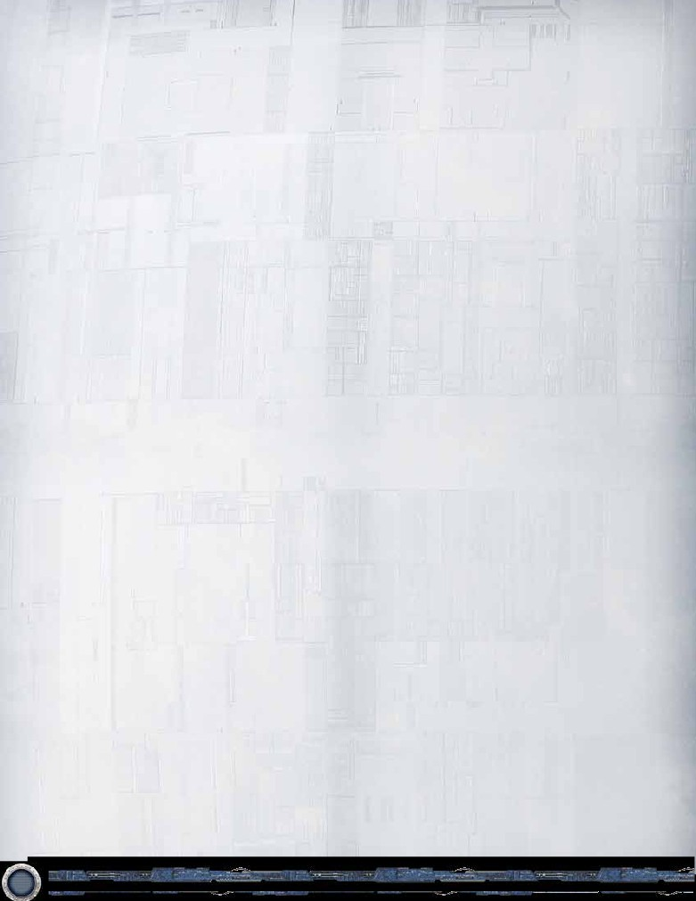
I target a unit with the action from a Jubba Bird and
If I place Arden Lyn (0830) in my edge stack from
choose tactics. If the targeted unit has an enhancement
my hand, does she enter play by her Reaction when I
that causes it to gain æ, does it lose that combat icon
discard my edge stack?
because it is not currently legal for the target to gain
icons?
No. Once you place Arden Lyn into your edge stack,
she is no longer in your hand. At the conclusion of the
Yes. An enhancement is just one example of a constant
edge battle, she is being discarded from your edge
effect that causes a unit to gain a combat icon. While
stack, not your hand. Therefore, you cannot trigger her
the duration of the Jubba Bird’s ability is active on a
Reaction.
unit, that unit is prevented from gaining combat icons
from any source, including constant effects. Thus, for
I control an undamaged Commando Operations (0519)
and my opponent placed a fate card into his edge stack.
the duration of the ability, the targeted unit would lose
the æ icon gained from an enhancement on it.
Am I able to use the Reaction on the Rebel Commando
(0521) in my hand?
With the Black Sun Headhunter’s Forced Reaction,
Commando Operations prevents the effects of a fate
can the controller choose between either spending
1 ∂ resource or destroying the unit? Or, must they
card from resolving; however, the fate card itself still
resolves when you reach the priority number printed
spend 1 ∂ resource and, if they cannot, he or she
destroys the unit instead?
on it. As the fate card resolves, even if its effects are
prevented from resolving by Commando Operations,
When resolving the Black Sun Headhunter’s Forced
you are able to use the Rebel Commando’s Reaction to
Reaction, the controlling player has the choice between
put that unit into play.
paying 1 ∂ resource or destroying the unit. They may
My opponent has placed an I Have You Now (0787) in
select either option, but must successfully resolve one
of them.
his or her edge stack. When is the proper time for me
to use the Reaction on Adaptive Strategy (0522)?
During a tournament, my opponent and I miss a Forced
Adaptive Strategy copies the effect of a fate card after
Reaction trigger on a card in play and notice the
oversight at some point later in the game. How do we
that effect resolves. The effect of I Have You Now is:
“...destroy a target participating enemy unit.” When
resolve this situation?
priority step 10 is reached, I Have You Now’s card
It is the responsibility of both players to keep track of
ability resolves, which sets up a delayed effect that has
all mandatory game occurrences. Forced Reactions
to wait until the winner of the edge battle is determined
are just one example of such mandatory game
before it can resolve.
occurrences. If such a game occurrence is missed,
If the controller of I Have You Now does not win the
both players should try to come to an agreement as
to how to resolve the situation. If an agreement can’t
edge battle, the conditional “If you win this edge battle”
be reached, a judge should be called to provide a
fails, and so the delayed fate card effect does not
resolve (and so you do not meet Adaptive Strategy’s
resolution.
triggering condition). If I Have You Now’s controller
In many cases, both players will genuinely have missed
wins the edge battle, that conditional is true, and the
the triggering of a mandatory game occurrence
delayed fate card effect resolves. It is at this point that
and can hopefully come to an agreeable solution
the LS player can react with Adaptive Strategy to copy
to the problem. However, it is possible that one or
the fate card effect of I Have You Now.
both players are attempting to unscrupulously take
advantage of the situation. In these cases, it is unlikely
Brainiac (0960) uses his ability to modify the
numeral “1” in the shielding reminder text of a
that an agreeable solution can be reached, and a judge
ruling will be necessary to resolve the situation fairly.
Death Squadron Star Destroyer (0219) to “0”. If the
Death Squadron Star Destroyer is declared as an
If Grand Moff Tarkin (0872) blanks the text box of my
attacker or defender, can its controller place a shield?
Derek “Hobbie” Klivian (0699) who is piloting one of my
Vehicles (or any other attached enhancement), what
Yes. Reminder text on a card is not game text.
Modifying the numeral in a keyword’s reminder text has
happens?
no effect on the resolution of that keyword.
According to (2.19) Enhancements and Attachment
Restrictions (pg. 6), if an attached enhancement
loses its text that gives it its attachment condition, that
enhancement is discarded. For Pilot cards, the pilot (X)
keyword contains the attachment condition for the
card, so if that is blanked by Tarkin’s ability, the Pilot
card is no longer legally attached to the Vehicle unit,
and is discarded.
© & TM Lucasfilm Ltd. © Fantasy Flight Games. Fantasy Flight Games and the FFG Logo
are ® of Fantasy Flight Games.
14
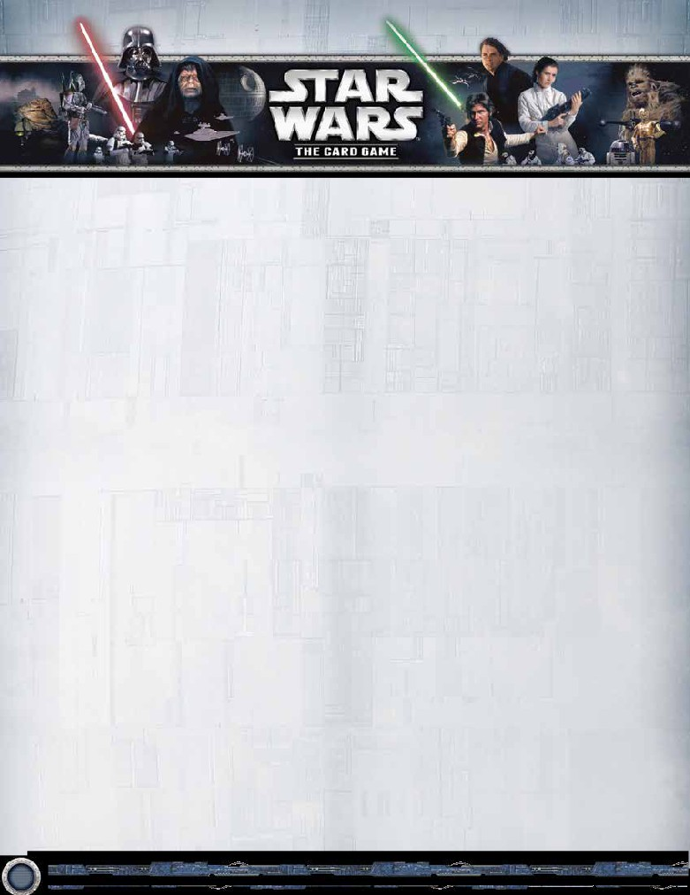
This section covers new rules introduced in the Force
that unit.
Pack cycles and Deluxe Expansions, and should be
treated as an addition to the rulebook in the Star Wars:
Piloting Limit
The Card Game Core Set.
If two or more Pilot enhancements are attached to
a single unit, that unit’s controller must immediately
Pilot (X)
discard Pilot enhancements from that unit until only one
Pilot (X) is a new keyword introduced in the Rogue
remains.
Squadron cycle expansion. The pilot (X) keyword allows
a unit to enter play as an enhancement attached to a
Example 2: The LS player wishes to play Derek
friendly Vehicle unit.
“Hobbie” Klivian (0699) from his hand onto his
Rogue Squadron X-Wing (0700). The Rogue
In order to play a card with the pilot (X) keyword from
Squadron X-Wing already has Wedge Antilles
hand as a Pilot enhancement, a player must pay the
(0183) attached to it as a Pilot enhancement. The
resource cost of X instead of the normal printed cost. X
LS player pays Derek “Hobbie” Klivian’s pilot cost of
is known as the “pilot cost” of the enhancement.
1 and attaches him as a Pilot enhancement to the
Rogue Squadron X-Wing.
When a card with the pilot (X) keyword is put into
play by a card effect, the player resolving the effect
As the Rogue Squadron X-Wing now has two
chooses whether it enters play as a unit or as a Pilot
attached Pilot enhancements, the LS player must
enhancement.
choose to discard one of them. He chooses to
discard Wedge Antilles, leaving the Rogue Squadron
The parenthetical text following “Pilot (X)” expresses
X-Wing with only Derek “Hobbie” Klivian attached as
the ability this card has only while it is being used as
a Pilot enhancement.
a Pilot enhancement. A card being used as a Pilot
enhancement retains any other text (outside of the
Card Type: Mission
parenthetical pilot text) it may possess.
Missions are a special type of objective that begin the
game in a player’s command deck rather than in his
Using the effect of the pilot (X) keyword is optional. A
player still has the option of playing a card with this
objective deck. During the deployment phase, a player
may pay the cost of a mission and deploy it in his
keyword as a unit by paying its printed resource cost.
opponent’s play area, under his opponent’s control. Each
Example 1: The DS player wants to play Baron
player may have only one mission in his play area at a
Fel (0714) on the 181st TIE Interceptor (0715).
time. While a player already has a mission in his play
The DS player pays Baron Fel’s pilot cost of 2 and
area, another mission cannot enter his play area for any
attaches him as a Pilot enhancement on the 181st
reason.
TIE Interceptor. Baron Fel is now considered an
attached enhancement with the text: “While this
While in play or in a player’s victory pile, for the
purposes of game and card effects, missions are
card is piloting a Fighter unit, each friendly Fighter
considered to be objectives. As such, a player may
unit gains elite and edge (1).”
engage a mission in his opponent’s play area in the
If the DS player had played Baron Fel as a unit,
same manner that he would engage any other objective
he would pay the printed cost of 4, and the
that opponent controls. When a mission is destroyed,
parenthetical text on Baron Fel would not be active.
it is placed in its owner’s victory pile and functions as
a destroyed objective for all game purposes. When a
Piloted and Piloting
mission enters a player’s victory pile, that player is said
A Vehicle unit with an attached Pilot enhancement
to have completed the mission and has the option to
is considered to be ‘piloted.’ A Pilot enhancement
initiate any Reaction on that mission that triggers on
attached to a Vehicle unit is considered to be ‘piloting’
being completed.
© & TM Lucasfilm Ltd. © Fantasy Flight Games. Fantasy Flight Games and the FFG
Logo are ® of Fantasy Flight Games.
16
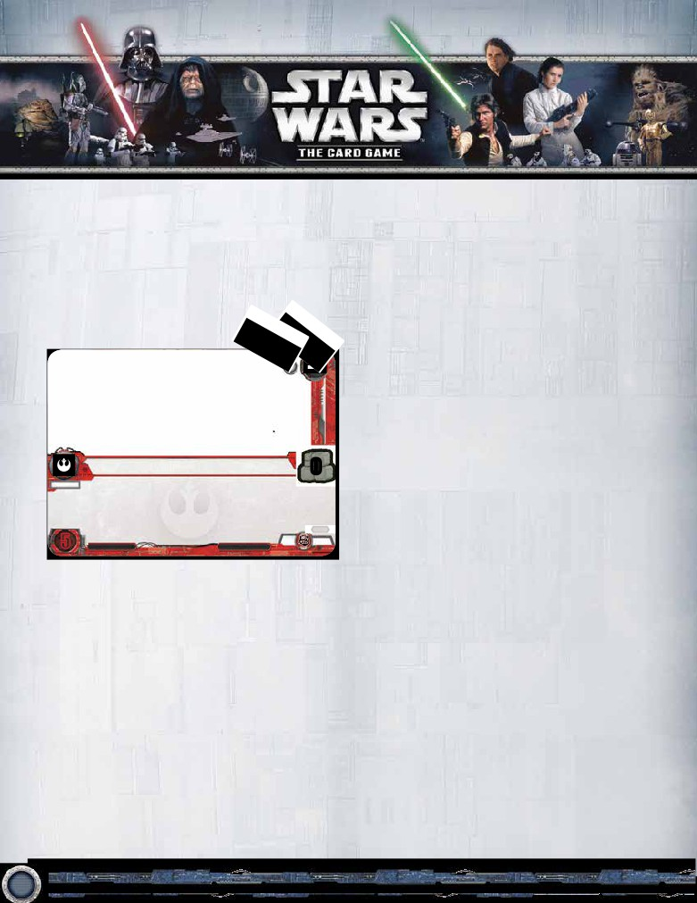
During the Refresh Phase, missions do not count
Contested Edge Battle
towards a player’s three objectives for the purposes of
The “contested edge battle” concept was introduced
determining if that player reveals a new objective.
in the Galactic Ambitions expansion. An edge battle is
“contested” if each player involved in the edge battle has
If a mission leaves play for any reason other than
a total of 1 or more Force icons in that edge battle. If
being destroyed, it is placed in its owner’s discard pile.
either player has a Force icon total of 0, then the edge
Missions cannot enter a player’s objective deck.
battle is “uncontested.”
A mission in an out of play area that is not a victory pile
Keyword: Influence
functions as a command card until it enter
If a resource providing card has the influence keyword,
Force Icons Cost
resources that are generated by that card are
considered to match all affiliations.
Affiliation Fate Cards
Before the Opposition cycle, all fate cards have been
neutral. Some objective sets in the Opposition cycle
contain fate cards that have an affiliation. These cards
follow the core rules regarding neutral fate cards. By
virtue of belonging to an affiliation, other abilities that
interact with cards belonging to that affiliation may also
interact with these cards.
Ground Support
0
MISSION
Endor.
Reaction: After this mission is completed, deal 1 damage to each enemy
unit and objective.
“Han will have that shield down.”
-Lando Calrissian, Return of the Jedi
0910
185
6 OF 6
5
© LFL © FFG
Illus. BalanceSheet
Terminology: Faction
A player’s “faction” is denoted by his affiliation card.
This enables other cards in the game to be identified as
being “in-faction” or “out-of-faction.”
An in-faction card is any card that shares an affiliation
with its controller’s affiliation card. An out-of-faction
card is any card that does not share an affiliation with
its controller’s affiliation card. Note that a mission card
under an opponent’s control is, by default, out-of-faction.
Example: Kris is using a Jedi affiliation card, which
indicates that his faction is Jedi. Tom plays the card
Filthy Accusations (0927), which places a focus
token on a target out-of-faction unit controlled by the
opponent. This card can target any Rebel Alliance,
Smugglers and Spies, or neutral unit that Kris
controls; it cannot target Kris’s Jedi units, because
those are in-faction.
© & TM Lucasfilm Ltd. © Fantasy Flight Games. Fantasy Flight Games and the FFG
Logo are ® of Fantasy Flight Games.
17